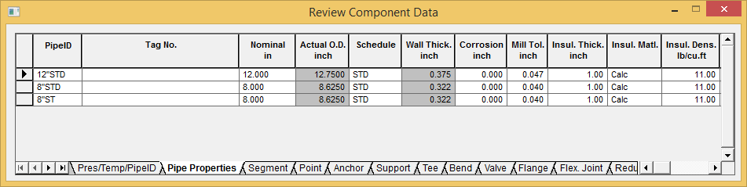
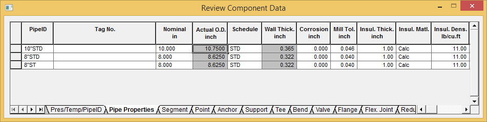

Modifying an Existing Pipe Identifier (Input Grids)
The properties of an existing pipe identifier can be modified using the Input Grids > Pipe Properties tab. After executing the View > Grid > Input command, simply go to the desired Pipe ID then modify values on that grid row. The procedure is provided below.
- If the grid is not already displayed, select View > Grid > Input, then click on the Pipe Properties tab.

- Select 12"STD {300STD} under the PipeID column, then type the new name 10"STD
{250STD}. The properties of 10"STD {250STD} will be used in all locations where the 12"STD
{300STD} pipe identifier was previously defined.
- From the Nominal in field, select a new pipe size of 10.000 {250} and press the Tab key.
- The Pipe Properties grid changes as shown below with the 10”STD {250STD} replacing the 12”STD {300STD} pipe identifier.
